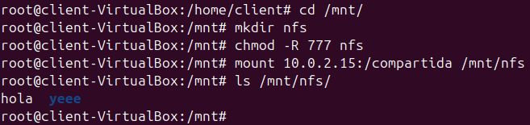

Comparació entre Samba i NFS
Samba i NFS són dos protocols utilitzats per compartir fitxers en una xarxa, però tenen diferències importants en autenticació, compatibilitat i ús.
Explicació breu
- Samba: Permet compartir carpetes i altres recursos, com impressores, entre sistemes Windows i Linux. Utilitza autenticació a nivell d'usuari i es pot integrar amb LDAP.
- NFS (Network File System): Està pensat principalment per a sistemes Unix/Linux i autentica a nivell d'host, no d'usuari.
Taula comparativa
| Característica | Samba | NFS |
|---|---|---|
| Compatibilitat | Linux i Windows | Principalment Linux/Unix |
| Autenticació | A nivell d'usuari | A nivell d'host |
| Integració amb LDAP | Opcional | No nadiu |
| Tipus de recursos compartits | Carpetes, impressores i altres | Principalment carpetes |
| Configuració principal | Requereix smb.conf |
Requereix exports |
| Protocol | Utilitza SMB/CIFS | Utilitza el protocol NFS |
| Clients compatibles | Windows i Linux | Sobretot Linux/Unix |
Instal·lació del servei NFS al servidor
Instal·lem el servidor NFS amb la següent comanda:
sudo apt install nfs-kernel-server
Comprovar que el servei està funcionant
Compartir directori
Primer, creem una carpeta amb el propietari i els permisos corresponents. Després, comprovem que s'ha creat correctament:
Muntar permanentment la carpeta compartida
Per fer-ho, editem el fitxer /etc/exports i afegim la següent línia:
/compartida *(rw,sync,no_subtree_check)
Després, reiniciem el servei:
systemctl restart nfs-kernel-server
Client Windows
Activem el client NFS a Windows:
- Anem a Panell de control → Programes → Programes i característiques.
- Seleccionem Activar o desactivar les característiques de Windows.
Comprovem que podem accedir des del menú de xarxa:
Podrem crear carpetes i fitxers:
Client Ubuntu
Configuració per muntar un recurs compartit en un client Ubuntu mitjançant NFS:
Creació i muntatge de la carpeta compartida
Anem al directori /mnt:
cd /mnt
Creem el directori nfs:
mkdir nfs
Afegim permisos 777:
chmod 777 nfs
Muntem la carpeta compartida del servidor NFS:
mount 10.0.2.15:/compartida /mnt/nfs/

Per verificar que s'ha muntat correctament:
df -h
Comprovació del muntatge
Un cop confirmat que el muntatge funciona correctament, podem accedir-hi per veure o afegir fitxers i carpetes:
Quan es crea un fitxer des del client, es pot observar que no té propietari. Això es deu al fet que el client no utilitza cap usuari o grup que formi part del servidor NFS i, per defecte, li assigna aquest valor:
Perfils mòbils al server
Crearem una carpeta perfils per emmagatzemar els perfils mòbils dels clients. Aquesta carpeta tindrà permisos 777 i estarà assignada a l'usuari nobody i al grup nogroup.
A continuació, afegim aquesta carpeta al fitxer /etc/exports perquè estigui muntada de manera permanent:
Finalment, reiniciem el servei NFS per aplicar els canvis:
sudo systemctl restart nfs-kernel-server
Perfils mòbils part LDAP
Primer, creem un usuari mitjançant un fitxer usu.ldif:
Després, afegim l'usuari al directori LDAP amb ldapadd:
Configuració del client
Configurem el client per muntar la carpeta perfils de manera automàtica.
Editem el fitxer /etc/fstab:
Comprovem que la carpeta s'ha muntat correctament:
Entrem a l'usuari i verifiquem la sessió amb whoami:
Si sortim de l'usuari sense tancar sessió, podem observar tant el nostre usuari local com l'usuari amb perfil mòbil: